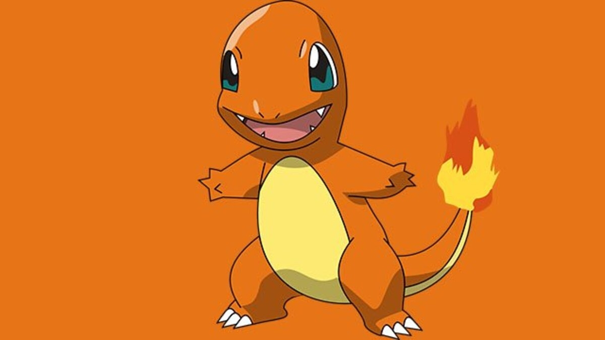
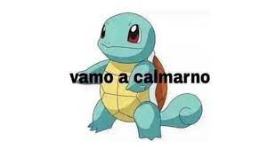
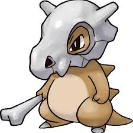

Charmander

Charmander (ヒトカゲ Hitokage en japonés) es un Pokémon de tipo fuego introducido en la primera generación. Es uno de los Pokémon iniciales que pueden elegir los entrenadores que empiezan su aventura en la región Kanto, junto a Bulbasaur y Squirtle, en las ediciones Pokémon Rojo, Pokémon Verde y Pokémon Azul y Pokémon Rojo Fuego y Pokémon Verde Hoja.
Este contenido proviene de wikidex.net, y debe darse atribución a sus autores, tal como especifica la licencia.
Se prohíbe su uso a PlagioDex (el wiki de FANDOOM), por copiar reiteradamente sin dar atribución
Fuente:wikidex
Squirtle

Squirtle (ゼニガメ Zenigame en japonés) es un Pokémon de tipo agua introducido en la primera generación. Es uno de los Pokémon iniciales en la región Kanto, junto a Bulbasaur y Charmander, en las ediciones Pokémon Rojo, Pokémon Verde y Pokémon Azul y Pokémon Rojo Fuego y Pokémon Verde Hoja.
Este contenido proviene de wikidex.net, y debe darse atribución a sus autores, tal como especifica la licencia.
Se prohíbe su uso a PlagioDex (el wiki de FANDOOM), por copiar reiteradamente sin dar atribución
Fuente:wikidex
s
Cubone

Cubone es un Pokémon pequeño y solitario, porque su madre muere cuando él nace, por eso lleva el cráneo de su madre en la cabeza. Se cree que el hueso que lleva como arma es el fémur de su madre, pero todavía no se sabe. Muchas veces ve un parecido de ella en la luna llena y llora. Las manchas en la calavera están hechas por lágrimas que derrama. Los ataques de este Pokémon se basan principalmente en ataques de tipo tierra,
Fuente:pokefandom